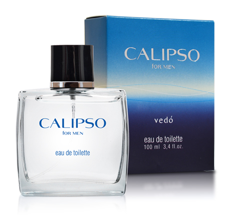

Элитная коллекция духов VP
Ароматы для женщин
Ароматы для мужчин
Ароматы с феромонами
Элитная коллекция VEDO
Декоративная косметика
|
|

|
Этот аромат — это смесь мужественности и абсолютной уверенности в себе!
Динамичный и полный энергии, он призывает встречать вызовы судьбы
открыто и уверенно, не уклоняться от проблем,
сохранять спокойствие и не сопротивляться динамике городской жизни.
Характеристика: свежий, заряжающий энергией, открытый, будоражащий.
Семейство ароматов: цитрусовые.
Начальная нота: мандарин, лимон, лаванда.
Нота «сердца»: фиалковые листья, специи, имбирь.
Конечная нота: палисандр, тиковая и эбеновая древесина.
|